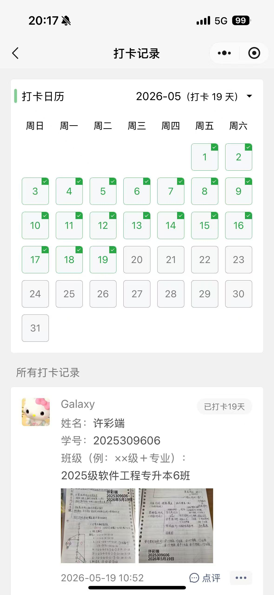
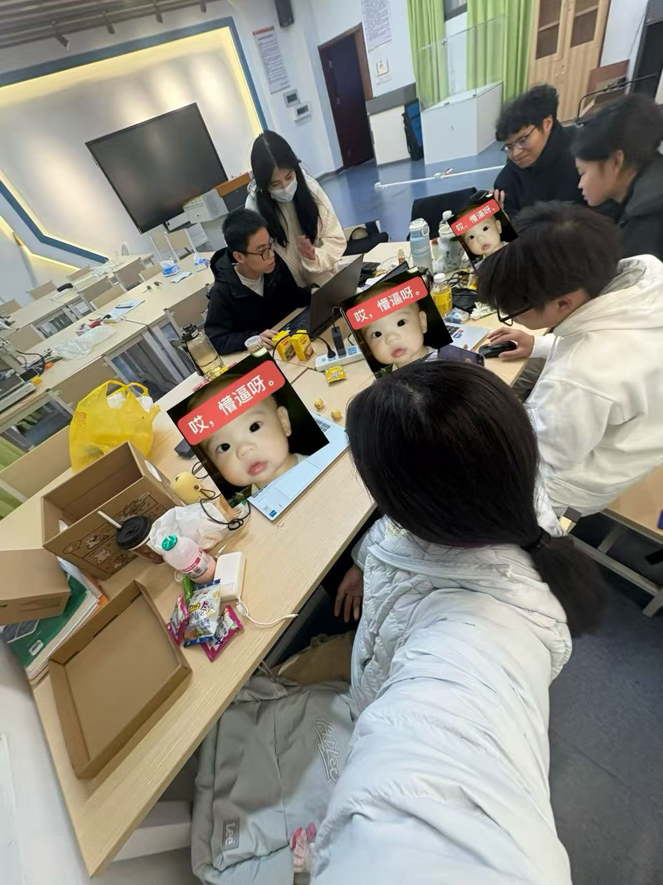
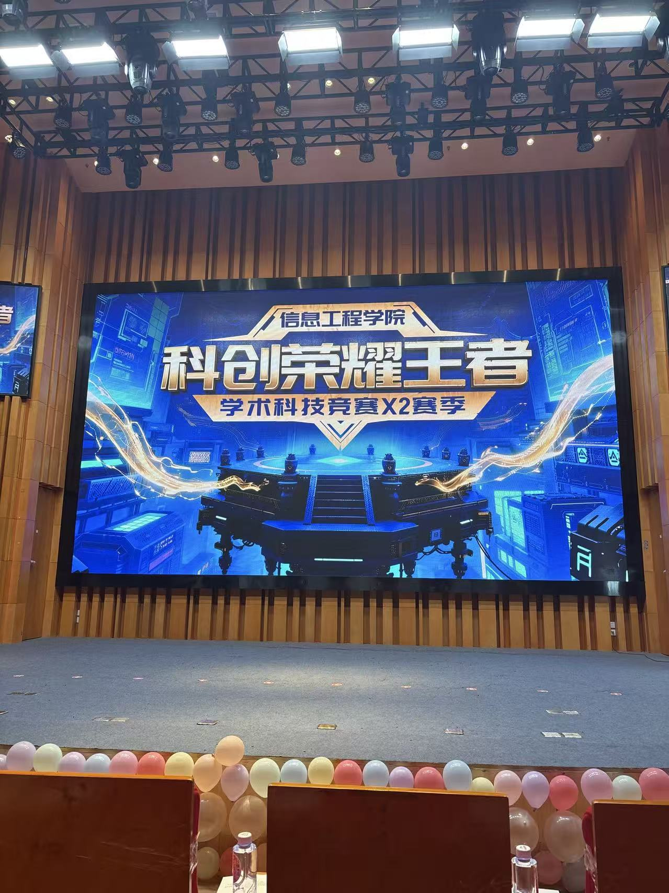
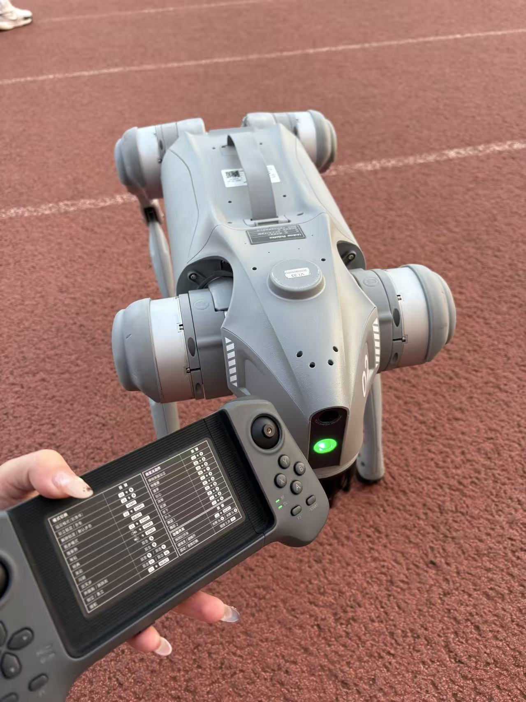

practice moment
把每一次实践，都认真留下
成果不只是一段经历，也是一点点被认真完成、认真保存的成长证据。
03 / achievements
把每一次学习、创作、参赛与协作，都认真收藏起来。


practice moment
成果不只是一段经历，也是一点点被认真完成、认真保存的成长证据。


在校认真钻研专业知识，保持良好学习状态，踏实积累专业基础，不断夯实自身学识素养，稳步提升专业水平。
日常接触界面设计、原型制作、图文排版与短视频创作，善于用创意表达想法，熟练运用各类实用创作工具。
跟随工作室学习 AI 各类实用技巧，运用智能工具完成内容创作、方案优化等工作，学会借助科技提升创作效率。
积极参与校内 AI 相关赛事，在比赛当中锻炼自身思维能力与实操能力，在比拼中学习他人长处，补足自身不足。
参与打造项目《AI 课立方 —— 基于 OpenHarmony 与大模型的国产化智慧教室解决方案》，深入了解国产系统、AI 大模型与智慧教育相关知识，在团队协作中完成项目打磨，积累科创项目经验。
积极参与工作室集体任务与校园实践活动，善于沟通配合，懂得互帮互助，在集体中学会包容与协作。